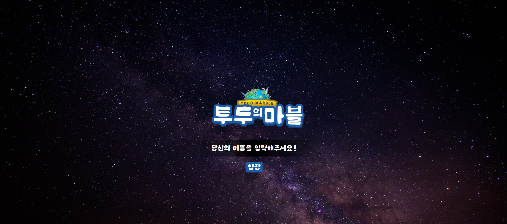
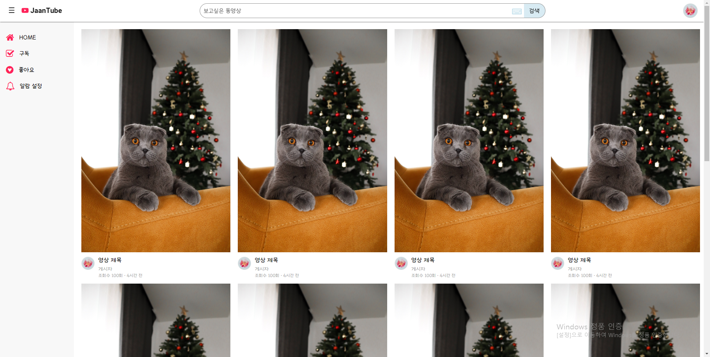
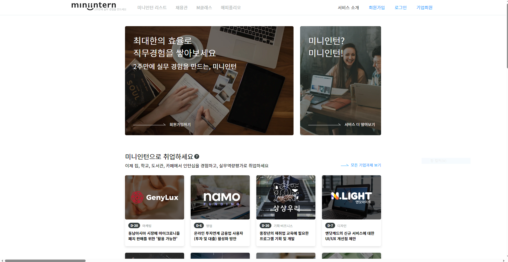
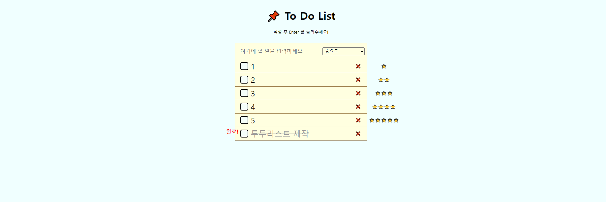

over
here !
Frajaancia
스페인어 의 '향기로움', 그리고 '방향'과 '명성' 을 뜻하는 단어 'fragancia' 와 저의 닉네임 'Jaan' 을 합쳐서 만든 이름으로,
앞으로 나아가고자 하는 길에 특색있는 저만의 기술로 독창성을 잃지 않고,
함께 소속된 회사의 가치관과 부합하여 시너지를 낼 수 있는 방향성을 추구합니다.
저만의 색깔로 향기를 담되, 제작하는 사이트의 목표와 조화로움을 이루어 가치 창출에 힘쓰고,
혼자가 아닌 다른 사람들과 어우러진 향기를 낼 수 있는 사람이 되고자 하는 저의 비전을 담고 있습니다.
함께 성장해 나아갈 수 있는 곳을 기다립니다🥰
스페인어 의 '향기로움',
그리고 '방향'과 '명성' 을 뜻하는 단어
'fragancia' 와 저의 닉네임 'Jaan' 을
합쳐서 만든 이름으로,
앞으로 나아가고자 하는 길에
특색있는 저만의 기술로 독창성을 잃지 않고,
함께 소속된 회사의 가치관과 부합하여
시너지를 낼 수 있는 방향성을 추구합니다.
저만의 색깔로 향기를 담되,
제작하는 사이트의 목표와 조화로움을 이루어
가치 창출에 힘쓰고,
혼자가 아닌 다른 사람들과
어우러진 향기를 낼 수 있는 사람이
되고자 하는 저의 비전을 담고 있습니다.
함께 성장해 나아갈 수 있는 곳을 기다립니다🥰
PROJECTS

이미지를 클릭하면
제작 사이트로 이동합니다.
-

서브웨이 웹사이트 클론
javascript 와 jQuery, SCSS 를 활용하여 서브메뉴와 메인슬라이드, 버튼이벤트 등을 만들고
로그인, 아이디, 비밀번호 찾기 등의 서브페이지를 php로 나누어 관리하여 백단을 경험 했으며,
닷홈으로 웹호스팅을 처음 시도하였습니다. -

오픈 API 개인 대시보드
구글 모멘텀의 로그인, 현재 시간, 날씨, 투두리스트 와 같은 기본기능을 구현해보며
오픈 API를 사용해보고, 메서드를 활용하여 웹 페이지를 제작하였습니다.
디자인 툴을 활용하여 컨셉에 맞는 자체 로고 제작 -

반응형 제작페이지 JaanTube
Youtube 컨셉의 반응형 웹 사이트로, 설정한 분기점에 따라 반응형 단위를 활용하여
기기별 다양한 크기의 화면에 대응할 수 있는 반응형 웹 사이트를 제작하였습니다. -

미니인턴 서비스 메인 페이지 클론
'미니인턴' 메인페이지를 하드코딩하여 구현하였습니다.
-
로그인 페이지 제작
로그인화면 UI를 구현하고 ID, PW 값을 임의로 지정하여
해당 정보에 맞게 유효성 검사(알림 메세지 띄움)를 할 수 있도록 제작하였습니다. -

Todo List 제작
해야할 일의 목록을 작성할 수 있는 '투두리스트' 제작을 목적으로 javascript 를 사용하여
목록의 중요도와 완료 여부, 삭제 등의 표시 기능들을 추가하여 제작하였습니다.
Contact Me
Jin Son
- jaan1ove@naver.com
- KakaoTalk
- 오픈채팅방 Link
또는 QR 코드
QR 코드